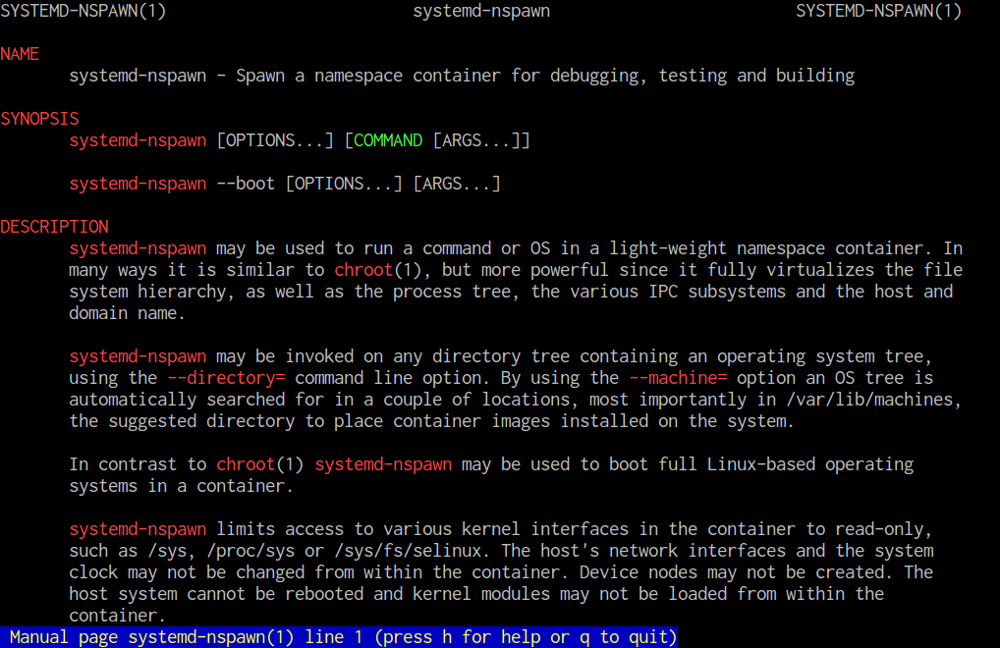

roid123
2017/02/17
とりあえず man systemd-nspawn してみる
man systemd-nspawn

[1] systemd-nspawn - ArchWiki
$ mkdir arch $ pacstrap -i -c -d arch base --ignore linux $ systemd-nspawn -b -D arch --bind=/var/cache/pacman/pkg
$ gem install reveal-ck $ vim slides.md $ reveal-ck generate $ reveal-ck serve
[2] GitHub - jedcn/reveal-ck [3] GitHub - hakimel/reveal.js